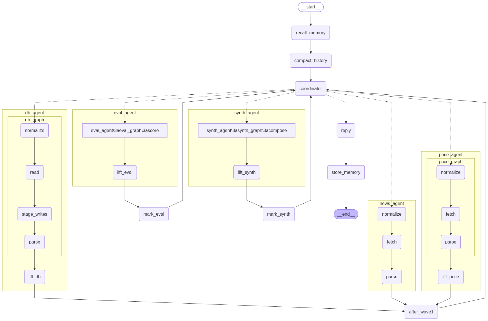

Đồ án cuối khóa · LLM Engineer
Trả lời câu hỏi tiếng Việt về cổ phiếu niêm yết — giá, tin tức, nguyên nhân biến động — bằng cách phối hợp nhiều nguồn dữ liệu thật (vnstock, CafeF, SQLite), không bịa số liệu khi thiếu dữ liệu, và không tự ý ghi dữ liệu mới vào kho mà chưa có người duyệt.
Kiến trúc
Decision point: chọn Hub-and-Spoke với routing động (LLM chọn worker kế tiếp mỗi vòng, theo mẫu agent_m2/hierarchical.py) — thay cho một máy trạng thái nhiều nhánh khó bảo trì. Đổi lại: tốn thêm 1 lời gọi LLM mỗi vòng, nhưng loại bỏ hẳn logic điều kiện cứng trong code.

Ảnh render trực tiếp từ graph LangGraph đang chạy (không phải sơ đồ vẽ tay). Mỗi worker chạy xong quay lại supervisor qua 1 node <domain>_collect gộp kết quả vào notes[symbol][domain]. LLM đọc lại notes, chọn tiếp worker + mã CP cụ thể hoặc "done" — multi-symbol thật: câu "HPG và FPT mã nào mạnh hơn" khiến mỗi worker chạy 2 lần (1 lần/mã), không gộp. db_write là 1 nhánh riêng supervisor có thể chọn (ép chạy trước "done" nếu còn dữ liệu chưa soạn ghi, lặp qua mọi mã); hitl_commit là node duy nhất graph dừng lại chờ người duyệt.
Tools
Hub (guardrail, supervisor, final_answer) không bind tool — nó dùng with_structured_output để ép LLM trả JSON đúng schema. Chỉ 4 worker (+ nhánh db_write) thật sự bind tool cho LLM tự chọn gọi, qua select_tools() theo catalog riêng từng domain.
symbols[] (multi-symbol) + câu viết lại rõ nghĩa, không parse free-text.symbol cụ thể (mã vòng này xử lý) + lý do.final_answer) — tổng hợp thẳng từ notes; model tự chọn gpt-4o/gpt-4o-mini theo độ khó câu hỏi.last=0 = không lấy được, không bịa số.idempotency_key để không soạn trùng khi LLM tự retry./pr/approve.Mỗi worker ReAct luôn có 1 tool "bắt buộc" làm việc thật (IO) + tool phụ (chuẩn hoá / mô tả nguồn) — pattern lặp lại nhất quán. Hub không cần tool vì việc của nó là quyết định + tổng hợp, ép schema chặt hơn là để LLM tự chọn hàm.
Decision points · 1/2
Bản trước là 1 hàm _coordinate nhiều nhánh if/else theo thứ tự cố định — khó mở rộng, khó đọc khi thêm nghiệp vụ mới. Bản này: LLM tự đọc notes đã tích luỹ, tự quyết định worker kế tiếp hoặc dừng. Đánh đổi: mỗi vòng tốn thêm 1 lời gọi LLM (RoutingDecision), nhưng loại bỏ hẳn logic điều kiện lồng nhau trong code.
route_supervisor ép db_writeLLM tự do chọn worker đọc dữ liệu (price/news/db/eval) — không side-effect nên an toàn để LLM quyết định. Nhưng ghi dữ liệu mới vào kho là side-effect thật: nếu LLM chọn "done" mà còn giá/tin vừa crawl chưa soạn lệnh ghi, code CƯỠNG BỨC đi qua db_write trước — không phó mặc bước có tác dụng phụ cho routing tự do.
Mỗi worker chỉ nhận catalog tool của riêng nó (PriceAgent không thấy fetch_cafef_news) — select_tools() embed mô tả tool trong catalog đó, cache theo tên catalog. Không dùng Hierarchical Grouping vì mỗi catalog đã là 1 domain hẹp, gom nhóm thêm sẽ thừa.
Decision points · 2/2
Lớp keyword rẻ (in_topic_scope) chạy mọi request; lớp LLM (llm_scope_check) chỉ chạy khi lớp 1 nghi ngờ — bắt câu diễn đạt khéo không chứa từ khoá. Câu "mã nào lãi nhiều nhất" đúng domain chứng khoán (guardrail không chặn) nhưng vượt khả năng agent (chỉ tra được 1 mã cụ thể) — quyết định sửa đúng ở prompt routing, không nhồi thêm điều kiện vào guardrail scope.
Model từng tự suy diễn "thiếu lịch sử" khi thấy prev_close=None dù pct_change đã có, hoặc tự bịa "KHÔNG khớp" khi price_matches_news=None. Sửa bằng cách diễn giải rõ từng field quan trọng thành câu tiếng Việt trong prompt gửi LLM, thay vì để model tự đoán từ JSON thô.
synthesis_agent riêngWorker ghép câu từng là 1 domain riêng trong routing (5 worker), nhưng đã gỡ bỏ hoàn toàn — final_answer_node tự tổng hợp thẳng từ notes tích luỹ. Ít 1 lời gọi LLM/turn, ít 1 domain routing phải dạy LLM khi nào chọn — đổi lại tổng hợp không còn là bước độc lập, tách rời để test riêng.
Cập nhật 2026-09-03
state["symbol"] đổi ý nghĩa: mã worker VÒNG NÀY xử lý — supervisor set lại mỗi vòng qua RoutingDecision.symbol. notes/price/news/db/eval đều là dict[symbol, X]. Worker không đổi gì nội bộ — chỉ hub-wrapper merge kết quả vào dict. Loop detection symbol-aware: lặp 3 lần "HPG:price_agent" không "lây" chặn oan sang FPT.
db_agent lộ độ mới dữ liệu ("vừa cập nhật", "hơn 1 giờ trước") ngay trong detail → tự chảy vào notes. _SUPERVISOR_SYSTEM dạy: dữ liệu mới hơn AGENT_PR_FRESHNESS_MINUTES (mặc định 20 phút) thì đủ dùng, không crawl lại — trừ khi user yêu cầu rõ "mới nhất".
gpt-4o cho câu phức tạp, gpt-4o-mini còn lại_select_final_answer_model(): nâng gpt-4o khi ≥2 mã, có từ khoá so sánh/tại sao/phân tích, hoặc ≥3 domain trong notes. Routing/rewrite/sentiment giữ nguyên gpt-4o-mini — chỉ bước tổng hợp cuối (ít lần gọi nhất/turn) mới đáng nâng model.
_packWorker subgraph không có checkpointer (không gì để đọc lại kiểu get_state_history). Giải pháp: react.extract_tool_trace() ghép AIMessage.tool_calls với ToolMessage ngay trong _pack, trước khi messages mất đi. trajectory_steps giờ hiện đúng price_agent.fetch_latest_close thay vì 1 dòng tóm tắt.
Human-in-the-Loop
Không worker nào tự hỏi ý kiến người dùng — HITL chỉ nằm ở tầng hub. Graph compile với interrupt_before=["hitl_commit"] — dừng đúng lúc chuẩn bị COMMIT tin/giá mới vào SQLite, chờ API /pr/approve mới đi tiếp.
Có dữ liệu mới crawl (không phải từ DB), soạn thành lệnh ghi chờ duyệt (pending) — chưa commit vào bảng chính.
Graph treo ở hitl_commit, trả về câu trả lời tạm (đã tổng hợp) kèm số lệnh đang chờ duyệt.
Người dùng duyệt/từ chối qua API — theo từng lệnh hoặc cả lô — graph tiếp tục đúng từ điểm dừng, không chạy lại từ đầu.
Kết quả đạt được
recursion_limit — lưới an toàn cuối cùng nếu routing động lặp vô hạn; đủ cho 2-3 mã cùng lúcCâu hỏi giá đơn giản chỉ tốn 1 worker + 2 lời gọi routing. Câu "tại sao giảm" tự mở ra 3 worker (price → news → eval). Câu "HPG và FPT mã nào mạnh hơn" tự nhân đôi số lượt gọi worker (1 lần/mã) — cùng 1 cơ chế routing, không cấu hình cứng theo loại câu hỏi hay số mã.
_select_final_answer_model() nâng gpt-4o đúng lúc cần (nhiều mã / so sánh / nhiều domain) — routing/rewrite/sentiment vẫn gpt-4o-mini. Kết hợp TTL freshness (không crawl lại khi DB đủ mới) giữ chi phí thấp cho câu lặp lại.
extract_tool_trace() trích tool-call thật ngay trong _pack mỗi worker (subgraph không có checkpointer để đọc lại). /pr/ask/evaluate giờ chấm được tool_correctness tới mức tool cụ thể + đúng mã CP, không chỉ đúng worker.
Demo
price_agent rồi "done" ngay. final_answer_node dùng gpt-4o-mini (câu đơn giản). Minh hoạ routing dừng sớm.trace cho thấy price_agent/news_agent chạy 2 lần (1 lần/mã), final_answer_node tự nâng gpt-4o (≥2 mã) để so sánh.notes["HPG"]["db_agent"] có "vừa cập nhật" — supervisor không crawl lại, tự đọc từ DB.db_write trước (lặp qua mọi mã nếu multi-symbol), rồi graph dừng ở hitl_commit. Gọi POST /pr/approve để duyệt.POST /pr/ask/evaluate sau câu 2trajectory_steps hiện đúng price_agent.fetch_latest_close/news_agent.fetch_cafef_news kèm mã CP — tool-call thật, không còn tóm tắt.Kèm một câu hỏi ngoài phạm vi ("thời tiết Hà Nội hôm nay") để minh hoạ guardrail đầu vào chặn trước khi vào supervisor.